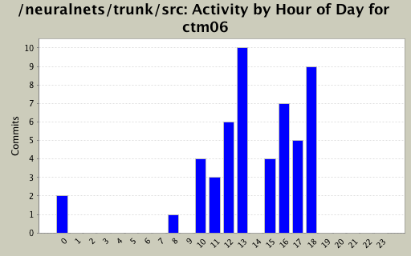
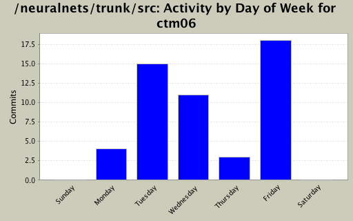
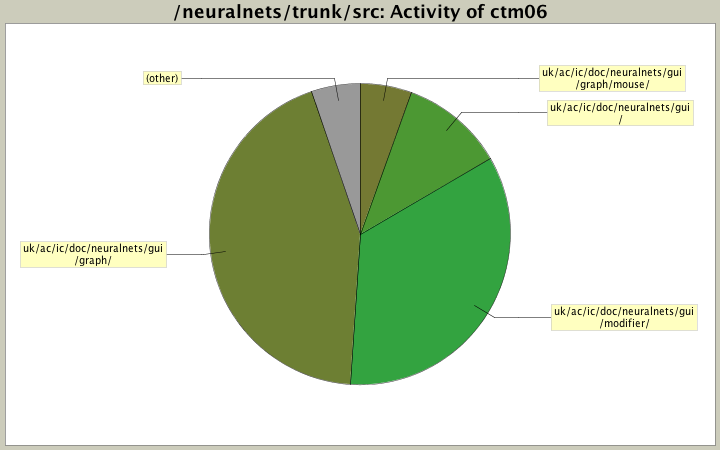

| Directory | Changes | Lines of Code | Lines per Change |
|---|---|---|---|
| Totals | 51 (100.0%) | 1851 (100.0%) | 36.2 |
| uk/ac/ic/doc/neuralnets/gui/graph/ | 13 (25.5%) | 810 (43.8%) | 62.3 |
| uk/ac/ic/doc/neuralnets/gui/modifier/ | 16 (31.4%) | 637 (34.4%) | 39.8 |
| uk/ac/ic/doc/neuralnets/gui/ | 10 (19.6%) | 205 (11.1%) | 20.5 |
| uk/ac/ic/doc/neuralnets/gui/graph/mouse/ | 4 (7.8%) | 103 (5.6%) | 25.7 |
| uk/ac/ic/doc/neuralnets/gui/commands/ | 1 (2.0%) | 47 (2.5%) | 47.0 |
| uk/ac/ic/doc/neuralnets/graph/io/ | 5 (9.8%) | 42 (2.3%) | 8.4 |
| uk/ac/ic/doc/neuralnets/gui/listeners/ | 1 (2.0%) | 4 (0.2%) | 4.0 |
| uk/ac/ic/doc/neuralnets/gui/graph/listener/ | 1 (2.0%) | 3 (0.2%) | 3.0 |

refactored AddInputNodesPanel so undoing and redoing input nodes automatically disposes and recreates shells as necessary - Chris
51 lines of code changed in 4 files:
added undo and redo support for AddOutputNodesPanel along with intellegent shell deletion etc - Chris
157 lines of code changed in 4 files:
fixed dumb copy-and-paste code in AddInputNodesPanel - chris
17 lines of code changed in 1 file:
removed my obnoxious debug messages from AddInputNodesPanel - Chris
0 lines of code changed in 1 file:
made AddInputNodesPanel into a command supporting undo and redo operations - Chris
145 lines of code changed in 1 file:
Refactored UndoNodes and added comments - Chris
44 lines of code changed in 1 file:
Refactored GUIManager, fixed a bug with the zoom buttons highlighting incorrectly, and added some nice comments - Chris
368 lines of code changed in 1 file:
Further refactored undo of nodes adding, and added undo functionality to LayeredNetworkModifier - Chrismail
188 lines of code changed in 2 files:
Re-added source and sink nodes, now that nothing crashes - Chrismail
7 lines of code changed in 1 file:
Refactored undo of nodes adding (and made it so it doesnt crash) - Chrismail
82 lines of code changed in 3 files:
fixed crash bug in ZoomInListener - Chrismail
4 lines of code changed in 1 file:
Finished source and sink nodes - Chrismail
111 lines of code changed in 4 files:
Added source and sink nodes to visualise incoming and outgoing connections. They are not arranged very nicely...yet - chrismail
101 lines of code changed in 2 files:
Got rid of abrasive COMMAND EVENTsvn statsvn statsvn stat messages and fixed bug with undo/selection - Chrismail
1 lines of code changed in 4 files:
Added intelligent zooming for redoing delete commands, and changed program title - Chrismail
52 lines of code changed in 3 files:
Zooming no longer crashes. I am an idiot. -Chris
6 lines of code changed in 1 file:
Made ElasticBandSelectionListener more efficient, so rectangles arent created and deleted every time the mouse moves - Pete and Chrismail
4 lines of code changed in 1 file:
Added a nice dotted rectangle to ElasticBandSelectionListener and fixed its behaviour - Pete and Chrismail
37 lines of code changed in 1 file:
Added ElasticBandSelectionListener and ensured handleClick is only called for non-drag events - Pete and Chrismail
62 lines of code changed in 2 files:
Integrated zooming into GUIManager! Not sure if it plays nicely with interactionutils yet - Chrismail
56 lines of code changed in 3 files:
(6 more)